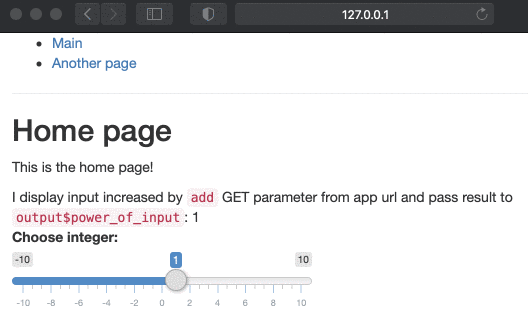

[Deprecated] Introduction to the routing in Shiny with shiny.router
Source:vignettes/basics_old.Rmd
basics_old.RmdThis tutorial is based on a deprecated API
(shiny.router<=0.2.3). New version can be found here.
In this tutorial we will walk you through the basics of routing with
the shiny.router library.
In a web application, routing is the process of using URLs to drive the user interface. Routing adds more possibilities and flexibility while building a complex and advanced web application, offering dividing app into separated sections.
Let’s build together a simple app that has two subpages and captures the data from url parameters.
We start by importing the packages.
Next, we create the content of our subpages: “home” and “another”.
home_page <- div(
titlePanel("Home page"),
p("This is the home page!"),
uiOutput("power_of_input")
)
another_page <- div(
titlePanel("Another page"),
p("This is the another page!"),
)Now we can create routing. We provide routing paths, a UI of the page
and (optionally) server-side callback for each page (here:
NA).
router <- make_router(
route("/", home_page, NA),
route("another", another_page, NA)
)Optionally, we can create a menu to easier navigate on our webapp:
menu <- tags$ul(
tags$li(a(class = "item", href = route_link("/"), "Main")),
tags$li(a(class = "item", href = route_link("another"), "Another page")),
)Now, we create an output for our router in main UI of Shiny app. We
also add sliderInput to test its functionality.
ui <- fluidPage(
menu,
tags$hr(),
router$ui,
shiny::sliderInput("int", "Choose integer:", -10, 10, 1, 1),
)Then, we plug router into Shiny server (note:
router$server at the beginning).
server <- function(input, output, session) {
router$server(input, output, session)
}In theory that would be it, but additionally we can also introduce
the mechanism of catching the parameters from the URL. We will use
get_query_param function. Our modified Server code may look
like this:
server <- function(input, output, session) {
router$server(input, output, session)
component <- reactive({
if (is.null(get_query_param()$add)) {
return(0)
}
as.numeric(get_query_param()$add)
})
output$power_of_input <- renderUI({
HTML(paste(
"I display input increased by <code>add</code> GET parameter from app url and pass result to <code>output$power_of_input</code>: ",
as.numeric(input$int) + component()))
})
}It’s time to run it.
shinyApp(ui, server)Here you can see the final result:

Feel free to copy the code of this example and test it on your own!